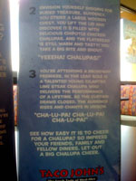
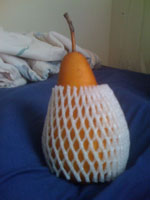

While deciding to add this website to the yahoo search engine, I experienced the multi-week downtime of the past few weeks. However, when I cam back online, I decided to check and see if yahoo had added me. What I am about to show you is what I saw:
A New Michael Welburn?
Posted April 18 2008 11:42AM by Michael
Your eyes do not deceive you. Loyal reader, and fellow ECE student and blogger, Chen Xu has become both the number 3 and number 5 results for my name. Not only that, he also is a suggested new search query. Words cannot explain how pathetic this is. Perhaps this is why Yahoo has been overtaken by other search engines, at least Google recognizes me. Heck, Live has me as the number 1 result, even though no one ever uses it.
As a follow up to the earlier Taco John's story, I took a picture of the little signs that were sitting on all of the tables, as it had me chuckling after the first scenario. I'll type out the pictures below so you don't have to squint past the glare. ARE YOU READY TO LET OUT A BIG CHALUPA CHEER? Perhaps you've never cheered for a chalupa before. Don't worry -- it's really quite easy. The key to a good chalupa cheer is visualization Try these scenarios:
Chalupa Cheer
Posted April 17 2008 3:57PM by Michael
Imagine your favorite baseball team. It's a tie game and they're batting in the bottom of the night, a pinch hitter comes to the plate. It's a hard-swinging seasoned beef chalupa. First pitch, it connects. It's going, going, gone!
WAY TO GO CHALUPA!"
Envision yourself digging for buried treasure. Suddenly, you strike a large wooden chest. You lift the lid and discover it's filled with delicious chipotle chicken chalupas. And the flatbread is still warm and tasy! You take a big bite and shout.
You're attending a Broadway premiere. In the lead role is a talented young cilantro lime steak chalupa who delivers the performance of a lifetime. As the curtain draws closed, the audience rises and chants in unison.
CHA-LU-PA!"
See how easy it is to cheer for a chalupa? So impress your friends, family and fellow diners. Let out a big chalupa cheer.
First of all, who thinks up these stories? Second of all, I don't think anything could compare to thousands of people chanting "CHA-LU-PA!" in unison. The image of that in my head is priceless.
While at Walmart yesterday, I decided to procure some fresh fruit (possibly, and quite likely, my last fresh fruit run before I graduate). I then decided to acquire some pears. That is where our story begins. Now normally, in the small rural town of Aurora, my mom usually seems to purchase bosc pears. Since I don't like to deviate from what has already been declared as good, I made a bee-line to them. However, something else caught my fathers eye: an asian pear. Now this was no ordinary piece of fruit. It was shaped simalarly to an orange, instead of the usual pear-like shape I am used to. However, that was not the most striking feature of this fruit...it had it's own styrofoam-mesh covering. Had I not been in shock at the time, I would have taken a picture of all 100 (give or take) asian pears in uniform. Sadly, it didn't even dawn on me to blog about this until after I had already devoured the asian pear. I decided to compare the two types of pear, for future reference. While the bosc pear remained delicious, the asian pear set new standards for what a pear should taste like. It was much juicier (waterier?), and had the taste of a dessert. In fact, they remind me of another delicious food of my past, lychee. I may have been biased while eating it, wanting to believe that any fruit that came in a uniform must be more delicious, but I will continue to believe myself. On the right I have photographed a rogue bosc pear masquarading as an asian pear.
The Battle of Pears
Posted April 16 2008 5:04PM by Michael
Thanks to Michael Pysson, the server has made substantial progress. It now allows for Remote Desktop, VPN, & File Sharing. Also, unlike when I tried, all of these work. However, I did get one thing to work on my own...MichaelWelburn.com is now running on the server! This requires almost no work outside of moving the virtual machine I have it running off of, but it is a small victory nonetheless. This does render my Mac Mini almost useless once I receive my recently ordered SiliconDust HDHomerun in the mail in a few days. It is still being used as a free DVR, as I currently use it with a pair of TV tuners that I bought used on eBay: the Elgato EyeTV 500 and Elgato EyeTV 200. They have actually worked quite nicely. However, the HDHomerun will replace the EyeTV 500 (and it has two HD tuners) and I have hope that the Hauppauge PVR-150 card that I installed in the server will be able to stream analog cable.
Server Update
Posted April 15 2008 8:31PM by Michael
I obviously ordered my customary 'Six pack and a pound', referring to six hard shelled tacos and two servings of potato oles (deliciously seasoned tater tots for the uninformed). I politely passed my second serving of oles to my parents, and then proceeded to finish the rest of my food. As we pulled away, only one thought entered my mind: 'Will I ever see you again?'
Reunited
Posted April 15 2008 5:02PM by Michael
 On my way back to campus on Sunday, my parents and I made a stop at arguably my favorite fast food restaurant of my previous 21+ years: Taco John's. What made this all the more memorable was that this was the same Taco John in Bourbannais that we stopped at on my way to move in my freshmen year. Somehow there is apparently two Taco John's literally down the road from each other, yet those are the only Taco John's in the entire trip. How we only stopped there one time in between that first trip and this most recent one is a baffling question my mom brought up.
On my way back to campus on Sunday, my parents and I made a stop at arguably my favorite fast food restaurant of my previous 21+ years: Taco John's. What made this all the more memorable was that this was the same Taco John in Bourbannais that we stopped at on my way to move in my freshmen year. Somehow there is apparently two Taco John's literally down the road from each other, yet those are the only Taco John's in the entire trip. How we only stopped there one time in between that first trip and this most recent one is a baffling question my mom brought up.